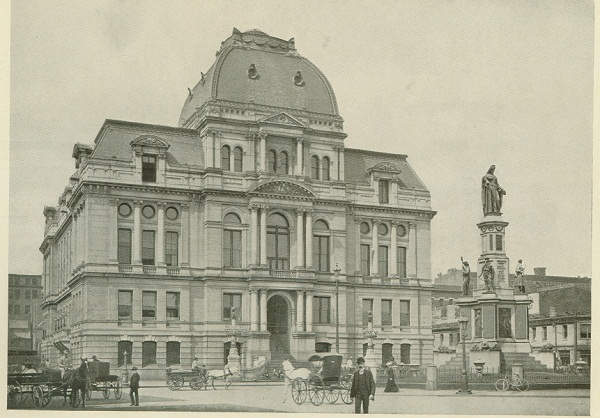
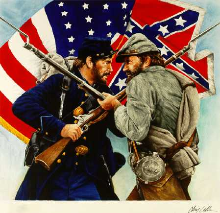
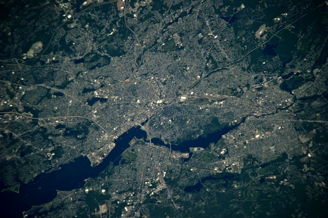
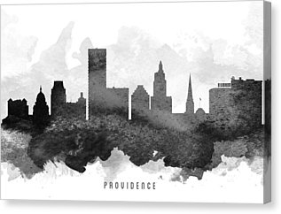
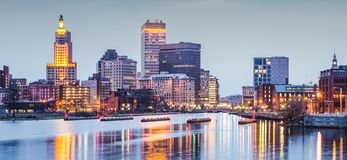
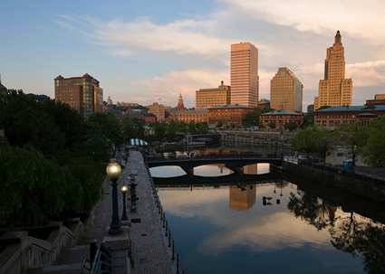
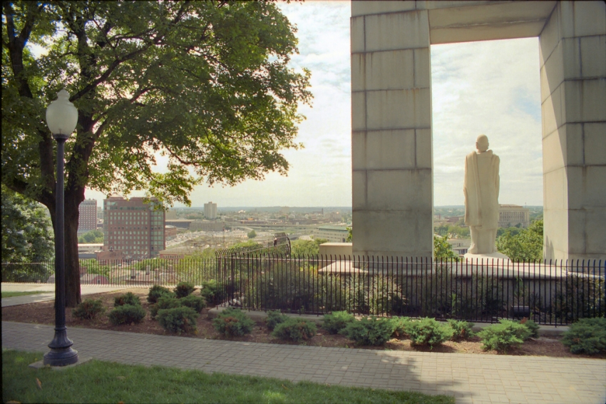
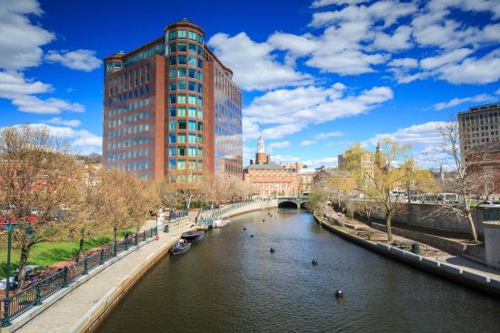
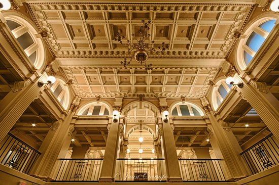
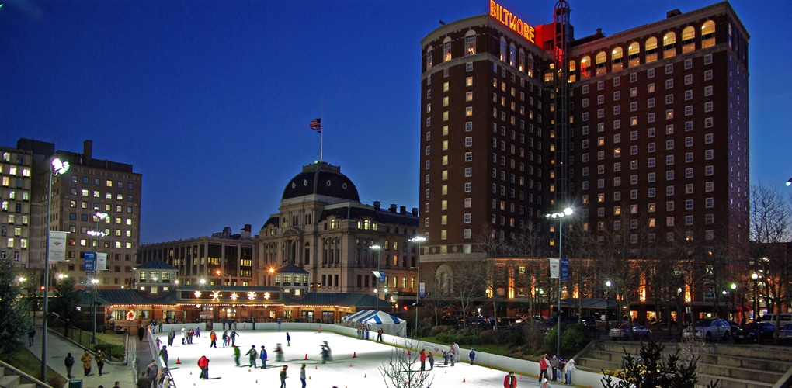

History
Settlement
The area that is now Providence was first settled in June 1636 by Roger Williams and was
one of the original Thirteen Colonies of the United States. Williams and his company felt
compelled to withdraw from Massachusetts Bay Colony. Providence quickly became a refuge
for persecuted religious dissenters, as Williams himself had been exiled from Massachusetts.
Revolution
Providence residents were among the first Patriots to spill blood in the leadup to the
American Revolution during the Gaspee Affair of 1772. Rhode Island was the first of the
thirteen colonies to renounce its allegiance to the British Crown on May 4, 1776. It was
also the last of the thirteen colonies to ratify the United States Constitution on May 29,
1790, once assurances were made that a Bill of Rights would become part of the Constitution.
Market Square was the center of civic life in the 19th Century, and Market House was home to
the city council before City Hall was built.
Incorporation as a city
Following the war, Providence was the country's ninth-largest city with 7,614 people.
The economy shifted from maritime endeavors to manufacturing, in particular machinery,
tools, silverware, jewelry, and textiles. By the start of the 20th century, Providence
boasted some of the largest manufacturing plants in the country, including Brown & Sharpe,
Nicholson File, and Gorham Silverware.
City Hall was built in 1878
City Government

Providence residents ratified a city charter in 1831 as the population passed 17,000. From
its incorporation as a city in 1832 until 1878, the seat of city government was located in
the Market House, located in Market Square, which was the geographic and social center
of the city. The city offices quickly outgrew this building, and the City Council resolved
to create a permanent municipal building in 1845. The city offices moved into the City
Hall in 1878.
Civil War

During the Civil War, local politics split over slavery as many had ties to Southern cotton.
Despite ambivalence concerning the war, the number of military volunteers routinely exceeded
quota, and the city's manufacturing proved invaluable to the Union.
20th Century
By the early 1900s, Providence was one of the wealthiest cities in the United States.
Immigrant labor powered one of the nation's largest industrial manufacturing centers.
Providence was a major manufacturer of industrial products from steam engines to precision
tools to silverware, screws, and textiles. Giant companies such as Brown & Sharpe, the
Corliss Steam Engine Company, Babcock & Wilcox, the Grinnell Corporation, the Gorham
Manufacturing Company, Nicholson File, and the Fruit of the Loom textile company were based
in or near Providence.
People gathering in Waterplace Park, opened in 1994, just before a WaterFire event. On the
left can be seen the Waterplace condominiums, constructed in 2008. The entire area had been
covered in railroad tracks, and the river was covered with paved bridges until the late 1980s.
From 1975 until 1982, $606 million of local and national Community Development funds were
invested throughout the city. In the 1990s, the city pushed for revitalization, ultimately
resulting in uncovering the rivers (which had been covered by paved bridges), relocating a
large section of railroad underground, creating Waterplace Park and river walks along the
river's banks, and constructing the Fleet Skating Rink (now the Alex and Ani City Center)
downtown and the 1.4 million ft square Providence Place Mall.
21st Century
Despite new investment, poverty remains an entrenched problem as it does in most
post-industrial New England cities. Approximately 27.9 percent of the city population is
living below the poverty line. Recent increases in real estate values further exacerbate
problems for those at marginal income levels, as Providence had the highest rise in median
housing price of any city in the United States from 2004 to 2005.
The city is recovering from the real-estate slump, with a proposed residential skyscraper
project called Hope Point Towers announced in mid-November, 2016.
Geography
General Geography Information
The Providence city limits enclose a small geographical region with a total area of 20.5
square miles (53 km2); 18.5 square miles (48 km2) of it is land and the remaining 2.1 square
miles (5.4 km2) is water (roughly 10%).

Providence is located at the head of Narragansett Bay,
with the Providence River running into the bay through the center of the city, formed by
the confluence of the Moshassuck and Woonasquatucket Rivers. The Waterplace Park amphitheater
and riverwalks line the river's banks through downtown.
Providence is one of many cities claimed to be founded on seven hills like Rome. The more
prominent hills are: Constitution Hill (near downtown), College Hill (east of the Providence
River), and Federal Hill (west of downtown and containing New England's largest Italian
district outside of Massachusetts). The other four are: Tockwotten Hill at Fox Point, Smith
Hill (where the State House is located), Christian Hill at Hoyle Square (junction of Cranston
and Westminster Streets), and Weybosset Hill at the lower end of Weybosset Street, which was
leveled in the early 1880s.
Cityscape
The city of Providence is geographically very compact, characteristic of eastern seaboard cities that
developed prior to use of the automobile. It is among the most densely populated cities in the country.
For this reason, Providence has the eighth-highest percentage of pedestrian commuters.

The
street layout is irregular; more than one thousand streets (a great number for the city's size) run
haphazardly, connecting and radiating from traditionally bustling places such as Market Square.
Downtown Providence has numerous 19th-century mercantile buildings in the Federal and Victorian
architectural styles, as well as several post-modern and modernist buildings located throughout the
area. In particular, a fairly clear spatial separation appears between the areas of pre-1980s
development and post-1980s development. West Exchange Street and Exchange Terrace serve as rough
boundaries between the two.

The newer area, sometimes called "Capitol Center", includes Providence Place Mall (1999), the Omni
Providence Hotel (1993) and The Residences Providence (2007), GTECH Corporation (2006), Waterplace
condominiums (2007), and Waterplace Park (1994). The area tends toward newer development, since much
of it is land reclaimed in the 1970s from a mass of railroad tracks referred to colloquially as the
"Chinese Wall". This part of Downtown is characterized by open spaces, wide roads, and landscaping.
The historic part of downtown has many streetscapes that look as they did eighty years ago. Many of
the state's tallest buildings are found here. The largest structure at 426 feet (130 m) is the art
deco styled 111 Westminster Street (formerly Industrial Trust Tower). By contrast, nearby to it is
the second tallest One Financial Plaza, designed in modern taut-skin cladding, constructed a
half-century later. In between the two is 50 Kennedy Plaza. The Textron Tower is also a core
building to the modest Providence skyline. Downtown is also the home of the Providence Biltmore and
Westminster Arcade, the oldest enclosed shopping mall in the U.S., built in 1828.

The city's southern waterfront, away from the downtown core, is the location of many oil tanks, a
docking station for a ferry boat, a non-profit sailing center, bars, strip clubs, and power plants.
The Russian Submarine Museum was located here until 2008, when the submarine sank in a storm and was
declared a loss. The Fox Point Hurricane Barrier is also found here, built to protect Providence from
storm surge like that which it endured in the 1938 New England Hurricane and again in 1954 from
Hurricane Carol.
The majority of the cityscape comprises abandoned and revitalized industrial mills, double- and
triple-decker housing (though row houses are rare, found so commonly in other Northeast cities), a
small number of high-rise buildings (predominantly for housing the elderly), and single family homes.
Interstate 95 serves as a physical barrier between the city's commercial core and neighborhoods such
as Federal Hill and the West End.
Sights to visit
Sights
Providence is home to a 1,200-acre (4.9 km2) park system, notably Waterplace Park and
Riverwalk, Roger Williams Park, Roger Williams National Memorial, and Prospect Terrace Park,
the latter featuring expansive views of the downtown area as well as a 15-foot tall granite
statue of Roger Williams gazing over the city. As one of the first cities in the country,
Providence contains many historic buildings, while the East Side neighborhood in particular
includes the largest contiguous area of buildings listed on the National Register of Historic
Places in the U.S., with many pre-revolutionary houses.

The East Side is also home to the
First Baptist Church in America, which was founded by Williams in 1638, as well as the Old
State House which served as the state's capitol from 1762 to 1904. Nearby is Roger
Williams National Memorial. The dome of the State House is the fourth-largest self-supporting
marble dome in the world and the second-largest marble dome after St. Peter's Basilica in Rome,
as well as the Westminster Arcade, which is the oldest enclosed shopping center in the U.S.

The main art museum is the Rhode Island School of Design Museum, which has the 20th-largest
collection in the country. The city is home to the Providence Athenaum, the fourth oldest
library in the country, in addition to the Providence Public Library and the nine branches of
the Providence Community Library. Edgar Allan Poe met and courted a love interest here
named Sarah Helen Whitman on one of his many visits to Providence. Poe was a regular
fixture here, as was H. P. Lovecraft (who was born in Providence), both influential writers of
gothic literature.

The Alex and Ani City Center (formerly the Bank of America Skating Center, and Fleet Skating
Center) is located near Kennedy Plaza in the downtown district, connected by pedestrian tunnel
to Waterplace Park, a cobblestone and concrete park below street traffic that abuts Providence's
three rivers.

The southern part of the city is home to the famous roadside attraction Nibbles Woodaway (also
known as the "Big Blue Bug"), the world's largest termite. Roger Williams Park contains a zoo,
a botanical center, and the Museum of Natural History and Planetarium.
Another well-known site is the Providence Biltmore Hotel located downtown near Kennedy Plaza,
a historic location built in 1922. The hotel is still a very popular site for travelers going
in and out of the state every day. The Biltmore closed in 1974. It was added to the National
Register of Historic Places in 1977, and it reopened in 1979.